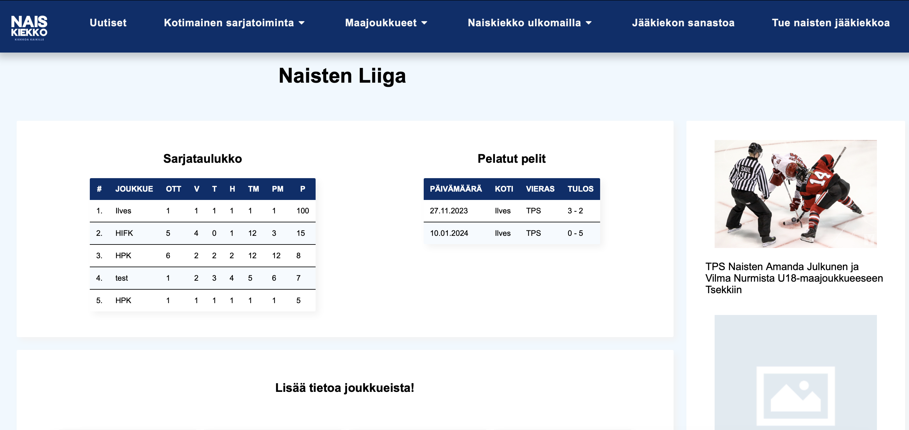

Projekti, jossa rakennamme Suomen naisten jääkiekolle omat verkkosivut. Sivuilla on keskitetysti tietoa suomalaisesta naisten jääkiekosta, esimerkiksi pelituloksia, joukkueiden tietoja sekä sarjataulukoita. Sivuilta löytyy myös tietoa ulkomaalaisista naisten jääkiekon liigoista.
Syksyllä 2023, jatkuu keväällä 2024.
Rakennamme projektitiimissä asiakkaalle verkkosivut, jossa käytämme seuraavia tekniikoita:

Huom! Kuvassa näkyvät tiedot ovat testidataa, joten ne eivät ole todellisia peli- tai sarjatuloksia.